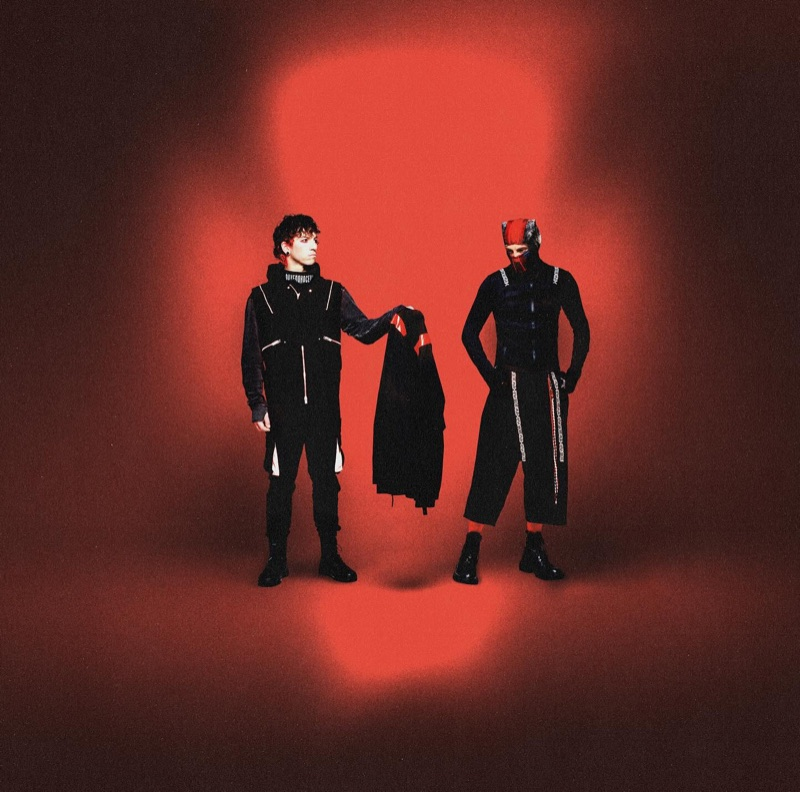

The Limited Illusion
Is indie vinyl still about the music?
When records are “limited”, what makes any of them rare?
Another colour, another “limited edition”, another pre-order countdown. We read
indie rock vinyl releases catalogued on Discogs to see what the word
limited
still tells a collector.
Research question In the streaming era, has the vinyl revival’s promise of “material authenticity” and “scarcity” in indie rock transformed into an inflated, gamified marketing mechanic?
Your guidesFour records and one label, one for each chapter. Follow them through the story.
01 Phenomenon
The Illusion of Exclusivity
How ordinary has “limited” become in indie rock vinyl?
- Indie rock vinyl labelled limited,
- Indie rock vinyl labelled limited,
- Pop vinyl labelled limited,
Indie rock often prides itself on rejecting mainstream commercialism. Its vinyl tells a different story.
Specimen 01 · Variant overload
Phoebe Bridgers — Punisher 2020 · Dead Oceans
Fig 01. Share labelled “Limited Edition”, per year
Fig 01b. Limited share by label size, 2015–2025
Label size = the label’s indie rock vinyl releases in the dataset.
In , only of indie rock vinyl records carried a “Limited Edition” tag: of .
By , that share peaked at , after the steepest five-year climb (–, ).
It still sits at in . And since , indie rock has labelled a higher share of its vinyl limited than pop (dots), which stood at in .
Since 2015This isn’t just the work of a few dominant players: the top 20 labels account for only of all limited releases. From labels with six releases up to the largest, the share barely moves: , , .
02 Mechanism
Schrödinger’s Pressing
When you buy a “limited” record, how many actually exist?
Specimen 02 · The unnumbered run
boygenius — the record · Interscope / Polydor
- Limited releases with no stated quantity
- All limited versions vs the largest single run
- Wanted more than standard: no number vs numbered
- vs
Flip a record over. The sticker says “limited”, but limited to how many: 500 copies, or 50,000? boygenius’s the record came out on vinyl releases in , of them labelled limited. One sticker per vinyl colour, with the quantities its listings state:
Fig 02. One hundred limited records
Fig 02b. Wanted more than the standard version of the same album
Every limited indie rock release recorded on Discogs, of them, as one hundred records: each stands for about . Every one carries the sticker.
Now the small print. say how many copies were pressed (“limited to 500 copies”). The rest show a question mark.
never state a pressing count in their release notes. Even when numbers are given, an album often has several limited versions: together their copies add up to the largest single “limited to” number (median of albums).
What do they say instead? The most common word group is , in of them.
Yet collectors don’t seem deterred: unnumbered editions are wanted more than the standard copy of the time, statistically indistinguishable from numbered ones (). The intervals overlap.
03 Contradiction
The Reskinning Game
How many versions change the music, and how many only change the packaging?
Specimen 03 · Many skins, same songs

Twenty One Pilots — Breach · Fueled By Ramen
- Vinyl versions per limited release,
- Breach, : releases / designs
- /
- Limited versions with the standard tracklist
Albums are increasingly broken into collectible variants. In , a limited release was on average one of vinyl versions of its album that year, up from in . In extreme cases, such as Twenty One Pilots’ Breach (filed under indie rock on Discogs), a single album generated designs and limited versions in alone ( releases). But what is actually pressed inside the sleeve?
Fig 03. Every listing’s tracklist, one on top of the other
Stack the versions. See one record.
Wolf Alice’s The Clearing: vinyl listings in , labelled limited. Many are the same disc listed again for another country or shop: they come down to discs and covers. Stacked, any different song would show as a ghost. None does; only the side-B numbering drifts.
Fig 03b. Tracklist drift, albums
Compared with the standard copy, of limited versions have identical tracklists ( of ). Only provide extra tracks, while contain fewer songs.
Fig 03c. Same titles, shorter songs
The tracklist is the same. The music is not.
Matching titles has a blind spot. A fan timed every song on Olivia Rodrigo’s LP against streaming (pop, not Discogs data): of songs are shorter on vinyl, in all.
04 Shift in emphasis
Eye Candy Over Ear Candy
Do listings describe how a record looks, or how it sounds?
Specimen 04 · Looks first
Japanese Breakfast — Jubilee · Dead Oceans
- Releases that mention the look,
- Releases that mention the sound,
- Releases saying “audiophile” / “half-speed”
- /
The vinyl revival was promised as a return to tactile ritual and acoustic depth. The data shows a shift from sound to sight. Around this page: fans’ photos of Japanese Breakfast’s Jubilee, which came out on vinyl releases in , of them named by a colour.
Fig 04. Look words vs sound words
1990Visual attributes (coloured vinyl, transparent wax, splatter) on of releases; acoustic craftsmanship (180 g, remastering, audiophile cuts) on .
2010Look , sound . Heavyweight vinyl is mentioned on of releases.
Visual mentions climbed to . Sound mentions crept to just : about to 1.
Inside soundHeavyweight peaked in at and fell to . Specialised audiophile terms are almost absent: “audiophile” on releases, “half-speed” on , out of .
Fig 04b. The palette of the revival
Clear, blue, white, red
Among the releases with a free-text description, the most common word is ().
All years as a table
05 Reflection
Nostalgia, Survival, and Letting Go
What does limited-edition culture mean for labels, artists and collectors?
- releases labelled limited
- Older albums among releases,
- Self-released, labelled limited (since 2015)
Some established labels lean on this formula hardest. (), () and () mark roughly half or more of their catalogue as limited. By comparison, self-released artists sit at (since 2015).
Specimen 05 · Who stamps “limited”
Three labels and the DIY shelf One spine = 1% of releases · dark = labelled “Limited Edition” · labels: all years, self-released: since 2015
Fig 05. The twenty labels with the most limited releases
Fig 05b. Older albums among sampled releases
The labelsThe twenty labels with the most limited releases, each logo sized by its count. Together they are only the thin slice of the bar. Against its own catalogue, prints “limited” most often (), least ().
ReissuesAt the same time, reissues and anniversary editions of older titles rose from of sampled releases () to (). The two intervals .
Streaming pays fractions of a cent; multi-variant merchandise may be one way mid-sized labels keep physical releases viable. But buying five different colours of the same album will not revive music’s physical authenticity. Perhaps it is time to leave unnumbered variants on the shelf, and redirect genuine support toward new music.
Before the next pre-order
A reflection, not a survey: nothing you tick is saved.
S Archive
The Specimen Shelf
The albums with the most vinyl designs in their release year, then and now. Open one to inspect it.
M Notes
Sources & Methods
Where the numbers come from, and what they cannot tell you.
Data
Discogs: every indie rock vinyl release from 1990 to 2025 (data dump and API, Sept–Oct 2026), with pop vinyl for comparison. Analysed in Python; every number on this page comes from that analysis. Olivia Rodrigo’s song lengths: a fan’s timing on Reddit.
Images
Album covers and product photos collected by the author; fan photos from Instagram; record photos from Pinterest. Fan and record photos open their original post.
What the data can’t tell you
- How many copies were pressed. “Limited” counts the word on a listing, not the size of a run.
- Whether a missing quantity is hidden. Discogs is written by its users; a number may simply not be entered.
- Whether the music sounds the same. Same track titles do not prove the same master.
- What people buy, or why. A wantlist is interest, not a purchase.
Reading
- Barton, B., Zlatevska, N., & Oppewal, H. (2022). Scarcity tactics in marketing: A meta-analysis of product scarcity effects on consumer purchase intentions. Journal of Retailing, 98(4), 741–758. doi.org/10.1016/j.jretai.2022.06.003
- Goulding, C., & Derbaix, M. (2019). Consuming material authenticity in the age of digital reproduction. European Journal of Marketing, 53(3), 545–564. doi.org/10.1108/EJM-10-2017-0717
- Hernandez, S. (2021). Marketing: How gamification produced a vinyl mania. Journal of Popular Music Studies, 33(3), 41–44. doi.org/10.1525/jpms.2021.33.3.41
- Mall, A. (2021). Vinyl revival. Journal of Popular Music Studies, 33(3), 73–77. doi.org/10.1525/jpms.2021.33.3.73